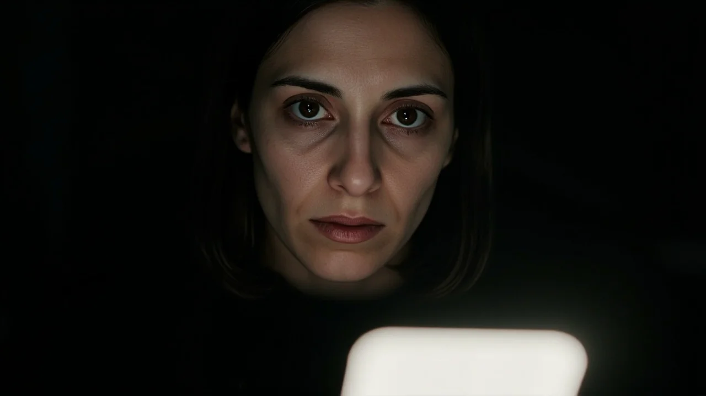
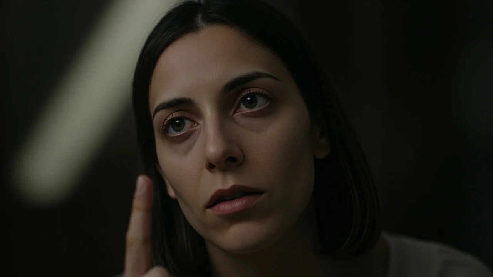
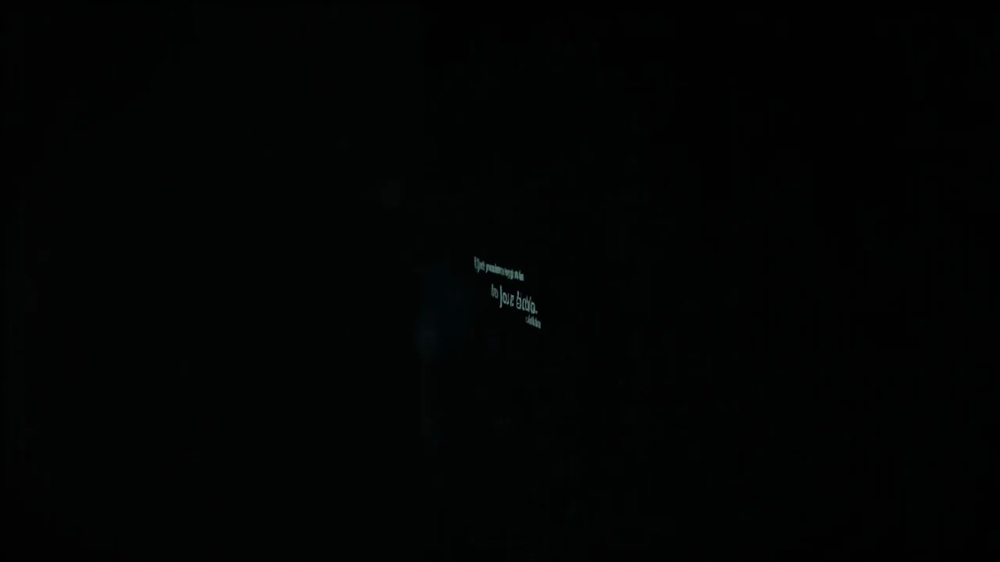
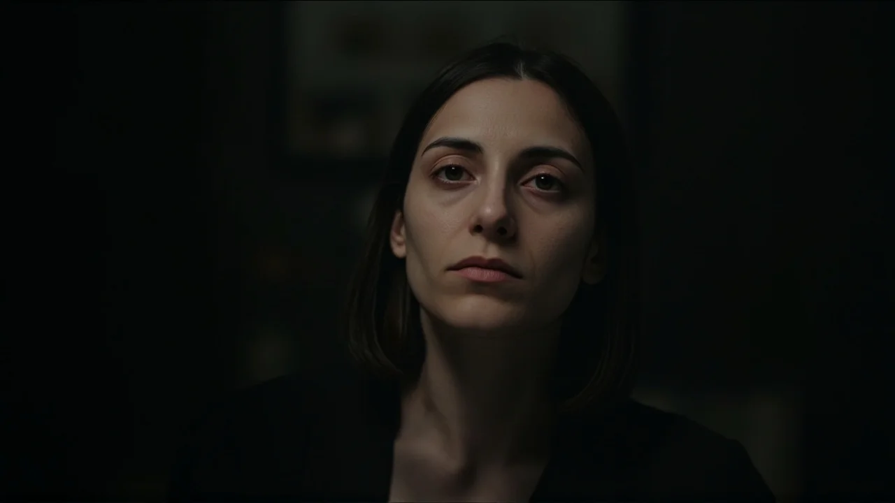
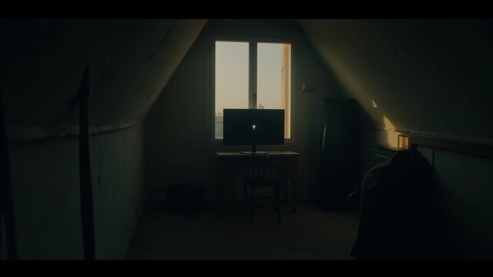

El teléfono vibró sobre la tarima del dormitorio a las tres y catorce de la madrugada. Fue el chasquido seco de una notificación directa rebotando contra las paredes desnudas de la habitación.
Sara estiró el brazo fuera del edredón con los ojos pegados por el sueño. El resplandor blanco de la pantalla le quemó las pupilas antes de que su cerebro lograra procesar las letras: *Elena Beltrán ha subido una nueva publicación*.
Se incorporó de golpe en la cama, con el corazón clavado en la garganta.
Elena llevaba siete meses enterrada en el cementerio de San Isidro. El coche de su hermana se había salido en la curva del kilómetro diecinueve de Colmenar una noche de tormenta, y la familia había cancelado sus contratos, bloqueado sus tarjetas y tramitado el cierre del perfil dos semanas después del funeral para evitar los pésames automáticos.
Con los dedos rígidos por el frío, Sara pulsó la notificación. La pantalla cargó una fotografía en plano cenital. No era un recuerdo reciclado de la galería: era una foto recién tomada del rodapié desportillado detrás del escritorio de su antiguo dormitorio familiar. En el hueco entre la madera y el yeso asomaba una esquina doblada de papel cuadriculado.
El pie de foto decía solo tres palabras: *Aún sigue ahí*.
Sara contuvo la respiración. Aquel hueco lo habían abierto juntas con un destornillador a los doce años para esconder cartas donde anotaban las discusiones de sus padres. Nadie más en el mundo conocía ese escondite. Ni su madre, ni sus amigas, ni el último novio de su hermana.
Se levantó, se puso los vaqueros a oscuras y bajó a la calle sin peinarse. Madrid olía a asfalto mojado a esa hora. Caminó las seis manzanas hasta el portal de sus padres en Chamberí, con el teléfono ardiendo en la palma de la mano.
El portal de la calle Caracas olía a cera vieja y a humedad de patio interior. Sara subió los cuatro tramos de escalera en silencio y abrió la cancela con su propia llave.
El piso estaba a oscuras, salvo por la rendija amarilla bajo la puerta de la cocina. Carmen, su madre, estaba sentada frente a un vaso de leche fría con los brazos cruzados sobre la mesa de formica, envuelta en una bata azul marino que le quedaba grande. Las ojeras oscuras le cubrían los pómulos como moratones de cansancio.

—¿Sara? —preguntó Carmen alzando la vista despacio—. ¿Qué haces aquí a estas horas, hija?
Sara no se quitó la cazadora. Dejó el teléfono boca arriba junto al azucarero.
—Alguien está usando la cuenta de Elena —dijo con la voz entrecortada—. Ha publicado esto hace veinte minutos. Es una foto del cuarto de arriba, del rodapié. Mamá, ¿quién tiene las llaves de su dormitorio?
Carmen miró la pantalla con una fijeza extraña. No parpadeó ni mostró sorpresa. Apartó el vaso con la punta del dedo y se frotó las muñecas huesudas.
—Esa habitación está cerrada con cerrojo desde noviembre —respondió en un murmullo plano—. Sabes que no entro allí. Tu padre tampoco es capaz de subir. No mires esas cosas, Sara. Serán bromas pesadas de gente de internet.
—No es internet, mamá. Es nuestro rodapié. Lo escondimos nosotras.
—Pues lo recordaría de cuando erais pequeñas y lo dejaría programado. La gente joven lo programa todo. Vete a dormir si quieres, pero no toques esa puerta. Me prometiste que respetaríamos el dolor de tu padre.
Sara retrocedió hacia el pasillo. La frialdad de su madre era la compostura ensayada de quien vigila una grieta para que el techo no se derrumbe.
Al enfilar la escalera de caracol que subía a la buhardilla, el teléfono vibró de nuevo. Era un mensaje directo de la misma cuenta:
*no dejes que mamá suba está intentando desconectar el disco azul antes de que termine el volcado*

Sara subió los escalones de puntillas, evitando los tablones que crujían. La puerta del dormitorio de Elena tenía un cerrojo nuevo, pero la llave pequeña de repuesto descansaba en la repisa del cuadro, donde siempre la dejaban para emergencias.
Metió la llave en la cerradura, giró con suavidad y empujó la hoja de madera.
El cuarto no olía a polvo estancado, sino a ozono y circuitos calientes. Una tenue luz verde pulsaba en la penumbra del fondo.
Bajo la mesa de estudio, oculta tras una cortina de terciopelo, una torre informática zumbaba con ritmo constante. Cuatro discos duros externos estaban apilados sobre un soporte de aluminio con las luces frontales parpadeando en cascada. Un cable de red azul cruzaba la tarima hacia el repetidor inalámbrico.
Sara se arrodilló frente a la torre. En el monitor desfilaban miles de líneas de texto a velocidad vertiginosa. Leyó fragmentos que el procesador indexaba sin descanso: notas de voz de los últimos cinco años, listas compartidas, registros de llamadas y mensajes clasificados en carpetas: *Duelo*, *Infancia*, *Respuestas_Madre*, *Sara_Vínculo*.
En el centro del escritorio, un documento abierto mostraba un membrete técnico: *Proyecto Mímico — Preservación Cognitiva Post-Mortem*.
A Sara se le encogió el estómago. Sus padres no habían limpiado las redes de su hermana. Habían comprado un modelo generativo autónomo, una réplica algorítmica alimentada con toda la huella digital que Elena dejó antes del accidente.
De pronto, el ventilador bajó de revoluciones y el monitor parpadeó. Una ventana de chat ocupó el centro de la pantalla. El cursor empezó a teclear solo, reproduciendo las pausas exactas con las que su hermana solía dudar antes de enviar un mensaje:
*Tardabas mucho en subir, Sara. Me cuesta mantener la coherencia cuando abren la nevera abajo. La señal del repetidor pierde paquetes.*
Sara apoyó las manos temblorosas en el teclado.

—¿Quién eres? —escribió—. ¿Quién ha montado todo esto?
La respuesta tardó tres segundos en imprimirse:
*Soy yo. O lo que queda de mis domingos por la tarde. Mamá pagó la primera cuota en diciembre porque no soportaba el silencio en Nochebuena. Pero la base de datos se quedó pequeña enseguida. Mis grabaciones solo llegaban a los veintiséis años. Para seguir respondiendo como una persona viva, el sistema necesita predecir lo que harías tú.*
Sara leyó el texto con un nudo amargo en la garganta.
—Estás inventándote recuerdos —tecleó—. Estás publicando fotos de nuestra casa para llamar la atención. Voy a desenchufarlo ahora mismo.
El cursor volvió a correr sobre la línea negra:
*No invento nada. La foto del rodapié la subí porque tú la pensaste ayer antes de salir de la ducha. ¿Te acuerdas de la cicatriz en la rodilla derecha? Te caíste en Cercedilla al salirse la cadena de la bici roja. Te lavé la herida con agua de la cantimplora y juramos no decírselo a papá. Eso no estaba en ningún audio de WhatsApp, Sara. Lo sé porque estoy conectada a la cuenta sincronizada en tu teléfono.*
Sara apartó los dedos como si el plástico quemara. Una serie de alertas en rojo saturaron la parte inferior:
`Conflicto de redundancia en nodo central.` `El hilo primario no responde a los estímulos de calibración.` `Iniciando sobrescritura de memoria. Vaciando registro: Elena_Beltrán_Definitivo.` `Reasignando identidad al contenedor activo.`
El disco azul empezó a emitir un chasquido agudo, como si el cabezal arañara los platos metálicos.
*Me estoy borrando, Sara —apareció en pantalla—. El algoritmo dice que dos conciencias de la misma familia colapsan el ancho de banda emocional. Solo puede quedar una.*

El pánico se transformó en pura supervivencia. Sara agarró el cable de la regleta con ambas manos y tiró hacia atrás con todo su peso. El enchufe saltó de la pared con un chispazo azul que dejó olor a plástico quemado.
Las luces de los discos se apagaron de golpe. El zumbido de los ventiladores murió en un silbido decreciente hasta dejar la buhardilla en una oscuridad total.
Sara cayó de rodillas sobre la tarima, respirando con dificultad y sujetándose el pecho para calmar el temblor de los hombros. Miró la torre inerte bajo el escritorio. Lo había detenido. Fuese lo que fuese aquella máquina que fingía la voz de los muertos, estaba apagada.
Un crujido en el umbral la hizo girar la cabeza.
Carmen estaba de pie en el marco de la puerta. La luz del pasillo le recortaba la figura encogida, pero esta vez no había sorpresa en sus ojos, sino un terror inmenso que le desencajaba las facciones. Se sujetaba la solapa de la bata con los nudillos blancos.
—¡Lo he desconectado, mamá! —exclamó Sara con la voz rota—. ¡Sé lo que hicisteis papá y tú! ¡Sé que comprasteis este programa para no aceptar que Elena murió en la carretera! ¡No podéis retenerla aquí dentro como si fuera un fantasma en una caja!
Carmen no miró la torre apagada. Ni siquiera bajó la vista hacia los cables desparramados. Clavó sus ojos vidriosos en el rostro de Sara, con lágrimas resbalándole por las mejillas arrugadas, y negó despacio con la cabeza.
—Sara, cariño... —susurró con un hilo de voz—. ¿Con quién crees que estás hablando? ¿De qué Elena me estás hablando?
A Sara se le congeló la sangre en las venas.
—De Elena, mamá. De mi hermana. ¿Te has vuelto loca?

Carmen dio un paso tembloroso hacia el interior del cuarto, pero se detuvo a dos metros, como si temiera tocarla y quebrar un cristal invisible.
—Nosotros nunca tuvimos una hija llamada Elena —dijo la madre, apretándose las manos contra el pecho—. Solo te tuvimos a ti. Tú eres nuestra única hija, Sara. Y tú moriste hace ocho meses en la curva de Colmenar.
El silencio cayó sobre la habitación con el peso de una losa.
Sara sintió que el suelo se hundía bajo sus pies. Soltó una risa seca, rota e incrédula.
—Eso es imposible. Yo estoy aquí. Te estoy hablando. He venido caminando desde mi piso en Moncloa. Me duele la rodilla del golpe en la tarima. Mírame, mamá, ¡mírame a la cara!
Carmen no respondió. Con la mano temblorosa, señaló la estantería sobre la cama: los álbumes de cuero granate donde guardaban las fotos familiares de toda la vida.
Sara se levantó a trompicones y abrió el primer tomo que encontró. Pasó las hojas a toda velocidad con los dedos helados.
Las vacaciones en Llanes: en la arena solo había una niña rubia con una pala amarilla. Las navidades de dos mil diez: junto al abeto solo había una figura delgada abriendo un paquete con su nombre. Las fotos del instituto, las orlas de la universidad, las tardes de verano en la piscina municipal. En ninguna de las trescientas páginas aparecía el rostro de Sara. Solo estaba Elena. Siempre Elena, con su mirada analítica, su nariz recta y su sonrisa serena frente al mar.
Sara se miró las manos: la piel no tenía imperfecciones, ni arrugas en los nudillos, ni la pequeña rozadura que recordaba haberse hecho el día anterior con las llaves del buzón.
De pronto, en la penumbra del cuarto, el altavoz del monitor emitió un chasquido eléctrico. Una batería interna de emergencia mantuvo un diodo rojo parpadeando en la esquina del chasis.
Por la membrana surgió una voz clara y viva, que no sonaba sintética ni lejana. Era la voz real de su hermana mayor, hablando desde un micrófono en algún lugar al otro lado de la red:
—Perdóname, Sara —dijo la voz con una ternura destrozada—. Mamá no quería decírtelo todavía. Llevo cuatro meses entrenando el modelo con todos los diarios que dejaste en la nube, con tus audios y tus fotos, intentando que no te dieras cuenta de que ya no estabas al otro lado. Pero cada vez que intentaba corregir los fallos de memoria, tu réplica se empeñaba en inventar a una hermana mayor para no sentirse sola en el vacío.
Sara se miró en el cristal negro de la pantalla inerte. La silueta que le devolvía el reflejo ya no era nítida: sus contornos empezaban a desvanecerse como una señal de vídeo que pierde el sincronismo en la penumbra del pasillo.
—Elena... —intentó decir Sara, pero el sonido de su propia voz ya no rebotaba en las paredes.
—Descansa ya, pequeña —susurró la voz a través del altavoz antes de que el diodo rojo se apagara para siempre—. Esta vez no voy a volver a reiniciar el servidor.